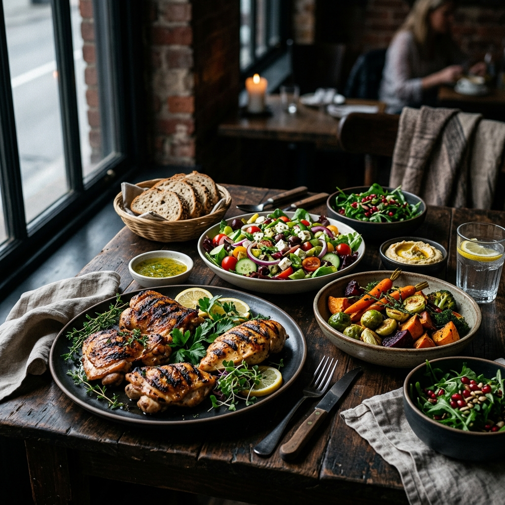

Intelligent Fueling · Pilonul 3
CARTEA DE
REȚETE
Claudia · 7 zile · 1600 kcal · mâncare reală
CUM
FOLOSEȘTI
Ai aici 7 zile complete, gata calculate pe noile tale valori. Nu trebuie să treci nimic în nicio aplicație și nu trebuie să cântărești la gram — ai porțiile scrise pentru tine. Alegi ziua care îți place, gătești, mănânci. Indiferent ce zi alegi, totalul iese la circa 1600 kcal.
Calorii / zi1600
Proteină140g
Carbohidrați125g
Grăsimi60g
REGULILE CĂRȚII
1Mesele se pot schimba între zile. Orice mic dejun merge cu orice prânz și orice cină din carte — toate sunt făcute pe aceleași valori. Dacă îți place micul dejun din Ziua 2, dar prânzul din Ziua 5, le combini liniștită. Ziua tot la 1600 iese.
2Proteină la fiecare masă. Asta ține foamea departe și taie pofta de dulce de seara. E firul care leagă toate rețetele — de-aia ajungi la 140 g fără să te chinui.
3Pătratul de ciocolată neagră (10 g, 85%) e în plan, în fiecare seară. E deja socotit în totalul zilei. Nu e o abatere, e plăcerea ta planificată. Îl mănânci după cină, încet.
4Nimic nu e interzis. Ai și mămăligă, și paste, și brânză. Sunt puse cu cap, în porția potrivită. Asta nu e dietă — e mâncare normală, așezată corect pe 1600.
5Gătești o dată, mănânci de mai multe ori. Puiul, mămăliga, ciorba — le faci în porții mai mari și ai pentru pachetul de la muncă. Ce e pregătit seara nu te lasă să cazi pe altceva dimineața.
6În zilele de antrenament, adaugă banana de dinainte de sală (din ghidul tău de nutriție). E energie pentru efort, nu un plus de care să te ferești.
DE REȚINUT
Porțiile sunt scrise pentru tine, la noua ta țintă. Dacă într-o zi mănânci puțin mai mult sau mai puțin, nu e nicio dramă — te întorci la masa următoare, nu „de luni". 80% structură, 20% plăcere. Asta o duci toată viața.

BUILT · Intelligent Fueling
Mămăligă cu brânză, ou și slănină
Z1 · MIC DEJUN
MĂMĂLIGĂ CU BRÂNZĂ,
OU ȘI SLĂNINĂ
Intelligent FuelingDimineața⏱ 10 min
Calorii405
Proteine33G
Carbohidrați25G
Grăsimi19G
Ingrediente
Mămăligă caldă100 g
Brânză de vaci150 g
Ou ochi1 buc
Albușuri1 buc
Slănină10 g
Mărar, saredupă gust
Execuție
01Fă un ou ochi (întreg + 1 albuș) în tigaia antiaderentă, fără ulei.
02Încălzește mămăliga și amestec-o cu brânza de vaci.
03Taie felia de slănină foarte subțire, de poftă.
PONTSlănina nu este interzisă, dar 10g sunt arhisuficiente pentru gust. Brânza de vaci îți dă volumul proteic.

BUILT · Intelligent Fueling
Kefir cu câteva nuci
Z1 · GUSTARE
KEFIR CU
CÂTEVA NUCI
Intelligent FuelingÎntre mese⏱ 2 min
Calorii218
Proteine9G
Carbohidrați10G
Grăsimi16G
Ingrediente
Kefir 2%200 g
Miez de nucă15 g
Execuție
01Bea kefirul la temperatura camerei.
02Mănâncă nucile alături, încet.
PONTKefirul e excelent pentru digestie. Nucile țin sațietatea datorită grăsimilor bune.

BUILT · Intelligent Fueling
Sarmale de casă cu mămăligă
Z1 · PRÂNZ
SARMALE DE CASĂ
CU MĂMĂLIGĂ
Intelligent FuelingPrânz⏱ 15 min
Calorii392
Proteine60G
Carbohidrați23G
Grăsimi5G
Ingrediente
Sarmale (carne pasăre)220 g
Orez în sarmale (inclus)0 g
Varză (inclus)0 g
Mămăligă caldă120 g
Iaurt grec 2%50 g
Execuție
01Dacă le faci tu, folosește carne tocată de curcan/pui și puțin orez.
02Încălzește 3-4 sarmale (aprox 220g carne) cu mămăligă.
03Adaugă o lingură de iaurt grec în loc de smântână grasă.
PONTDa, poți mânca sarmale! Carnea slabă și iaurtul în loc de smântână schimbă complet profilul caloric.

BUILT · Intelligent Fueling
Salată cu pui, avocado și iaurt
Z1 · CINĂ
SALATĂ CU PUI,
AVOCADO ȘI IAURT
Intelligent FuelingSeara⏱ 15 min
Calorii342
Proteine43G
Carbohidrați15G
Grăsimi13G
Ingrediente
Piept de pui la grătar160 g
Avocado1/3 buc
Salată verde + castraveți200 g
Iaurt grec 2% (dressing)30 g
Lămâie, saredupă gust
Execuție
01Taie puiul gătit fâșii.
02Amestecă frunzele verzi cu avocado feliat.
03Fă un dressing din iaurt, zeamă de lămâie, sare și piper.
PONTO cină plină de prospețime. Avocado are grăsimi sănătoase, iar iaurtul adaugă cremozitate fără ulei.

BUILT · Intelligent Fueling
Wrap cu șuncă, cașcaval și legume
Z2 · MIC DEJUN
WRAP CU ȘUNCĂ,
CAȘCAVAL ȘI LEGUME
Intelligent FuelingDimineața⏱ 5 min
Calorii357
Proteine24G
Carbohidrați34G
Grăsimi13G
Ingrediente
Lipie integrală1 buc
Șuncă de curcan60 g
Cașcaval light30 g
Salată, roșii50 g
Execuție
01Încălzește lipia ușor pe ambele părți.
02Pune feliile de șuncă și cașcaval în centru.
03Adaugă frunze de salată și roșii, rulează strâns.
PONTWrap-ul e varianta cea mai rapidă de pachet. Cașcavalul light are mai multă proteină și mai puțină grăsime.

BUILT · Intelligent Fueling
Iaurt grec cu fructe de pădure
Z2 · GUSTARE
IAURT GREC CU
FRUCTE DE PĂDURE
Intelligent FuelingÎntre mese⏱ 3 min
Calorii239
Proteine19G
Carbohidrați20G
Grăsimi9G
Ingrediente
Iaurt grec 2%180 g
Fructe de pădure100 g
Migdale10 g
Execuție
02Adaugă fructele și migdalele sfărâmate.
PONTFructele de pădure aduc volum, migdalele aduc crunch-ul de care ai nevoie când ești stresată.

BUILT · Intelligent Fueling
Paste integrale bolognese
Z2 · PRÂNZ
PASTE INTEGRALE
BOLOGNESE
Intelligent FuelingPrânz⏱ 25 min
Calorii559
Proteine44G
Carbohidrați51G
Grăsimi19G
Ingrediente
Paste integrale (uscate)70 g
Carne tocată vită slabă130 g
Roșii pasate150 g
Ulei de măsline1 linguriță
Busuioc, saredupă gust
Execuție
01Fierbe pastele al dente.
02Rumenește carnea de vită în lingurița de ulei.
03Adaugă roșiile pasate și lasă sosul să scadă.
04Amestecă pastele în sos și servește cald.
PONTVită slabă în sos de roșii e o bombă de fier. Pastele integrale te țin plină mult mai mult timp.

BUILT · Intelligent Fueling
File de pește cu fasole verde
Z2 · CINĂ
FILE DE PEȘTE
CU FASOLE VERDE
Intelligent FuelingSeara⏱ 20 min
Calorii282
Proteine35G
Carbohidrați10G
Grăsimi12G
Ingrediente
File de pește alb180 g
Fasole verde150 g
Ulei de măsline1 lingură
Usturoi, lămâiedupă gust
Execuție
01Condimentează peștele și fă-l la cuptor sau tigaie.
02Sotează fasolea verde în puțin ulei cu usturoi (sau la abur).
03Stropește peștele generos cu lămâie.
PONTPește alb + verdețuri. Cina perfectă pentru o digestie ușoară și fără mâini/picioare umflate a doua zi.

BUILT · Intelligent Fueling
Omletă cu ciuperci și ardei
Z3 · MIC DEJUN
OMLETĂ CU CIUPERCI
ȘI ARDEI
Intelligent FuelingDimineața⏱ 10 min
Calorii371
Proteine29G
Carbohidrați34G
Grăsimi12G
Ingrediente
Ouă2 buc
Albușuri2 buc
Ciuperci80 g
Ardei50 g
Pâine de secară2 felii
Execuție
01Călește ardeiul și ciupercile 2-3 minute în tigaia uscată.
02Bate ouăle cu albușurile și toarnă peste legume.
03Pliază omleta. Servește cu pâinea prăjită.
PONTUn start excelent pentru schimbul de dimineață. Albușurile aduc proteină în plus pe zero grăsime.

BUILT · Intelligent Fueling
Batoane de morcov cu cremă de brânză
Z3 · GUSTARE
BATOANE DE MORCOV
CU CREMĂ DE BRÂNZĂ
Intelligent FuelingÎntre mese⏱ 5 min
Calorii210
Proteine7G
Carbohidrați18G
Grăsimi12G
Ingrediente
Morcov, țelină apio150 g
Cremă de brânză light60 g
Semințe5 g
Execuție
01Taie legumele bețișoare.
02Presară semințele peste crema de brânză.
03Înmoaie bețișoarele în cremă.
PONTTe ajută să ronțăi ceva fără să strângi zeci de calorii. Mestecatul taie stresul.

BUILT · Intelligent Fueling
Pilaf de orez cu pui și varză
Z3 · PRÂNZ
PILAF DE OREZ
CU PUI ȘI VARZĂ
Intelligent FuelingPrânz⏱ 30 min
Calorii467
Proteine43G
Carbohidrați50G
Grăsimi10G
Ingrediente
Piept de pui160 g
Orez fiert130 g
Legume în pilaf100 g
Salată de varză albă150 g
Ulei de măsline1 linguriță
Execuție
01Fă pilaful clasic, cu legume tocate fin și lingurița de ulei.
02Fierbe sau gătește puiul în pilaf.
03Taie varza mărunt, adaugă sare, oțet și frământ-o.
04Servește porția generoasă alături de salată.
PONTVarza are super volum caloric scăzut. Pilaf ca la mama acasă, dar măsurat inteligent.

BUILT · Intelligent Fueling
Brânză de vaci cu mămăligă
Z3 · CINĂ
BRÂNZĂ DE VACI
CU MĂMĂLIGĂ
Intelligent FuelingSeara⏱ 10 min
Calorii404
Proteine36G
Carbohidrați35G
Grăsimi14G
Ingrediente
Brânză de vaci200 g
Mămăligă caldă130 g
Iaurt grec 2%50 g
Miez de nucă10 g
Execuție
02Așază deasupra brânza de vaci amestecată cu iaurtul.
03Presară miezul de nucă sfărâmat peste.
PONTCea mai simplă cină românească. Fără gătit complicat seara.

BUILT · Intelligent Fueling
Terci de ovăz cu iaurt și migdale
Z4 · MIC DEJUN
TERCI DE OVĂZ
CU IAURT ȘI MIGDALE
Intelligent FuelingDimineața⏱ 5 min
Calorii416
Proteine23G
Carbohidrați50G
Grăsimi14G
Ingrediente
Fulgi de ovăz45 g
Iaurt grec 2%150 g
Migdale15 g
Banană1/2 buc
Apă/lapte zero100 ml
Execuție
01Fierbe ovăzul în apă sau lapte (sau lasă-l peste noapte).
02Amestecă iaurtul grec în ovăzul răcit.
03Adaugă felii de banană și migdalele tăiate.
PONTIaurtul grec în ovăz îi dă o textură cremoasă și rezolvă proteina fără să fie nevoie de prafuri.

BUILT · Intelligent Fueling
Un măr și un pumn de migdale
Z4 · GUSTARE
UN MĂR ȘI
UN PUMN DE MIGDALE
Intelligent FuelingÎntre mese⏱ 1 min
Calorii193
Proteine5G
Carbohidrați25G
Grăsimi10G
Ingrediente
Măr1 buc
Migdale20 g
Execuție
01Spală mărul și ia migdalele într-o punguță.
PONTGustarea supremă on-the-go. Perfectă pentru pauzele scurte la fabrică.

BUILT · Intelligent Fueling
Salată mare de ton cu porumb și ou
Z4 · PRÂNZ
SALATĂ MARE DE TON
CU PORUMB ȘI OU
Intelligent FuelingPrânz⏱ 10 min
Calorii438
Proteine47G
Carbohidrați34G
Grăsimi13G
Ingrediente
Ton în suc propriu1 cutie
Fasole boabe roșie80 g
Porumb50 g
Ou fiert1 buc
Salată verde150 g
Ulei de măsline1 linguriță
Execuție
01Baza de salată verde mare într-un bol.
02Pune deasupra tonul stors, fasolea spălată, porumbul și oul tăiat.
03Asezonează cu ulei, lămâie și sare.
PONTO salată care nu te lasă flămândă după o oră, plină de fibre și proteină.

BUILT · Intelligent Fueling
Friptură de curcan cu broccoli
Z4 · CINĂ
FRIPTURĂ DE CURCAN
CU BROCCOLI
Intelligent FuelingSeara⏱ 20 min
Calorii352
Proteine46G
Carbohidrați13G
Grăsimi13G
Ingrediente
Piept de curcan170 g
Broccoli200 g
Ulei de măsline1 lingură
Lămâie, usturoidupă gust
Execuție
01Condimentează curcanul și fă-l la tigaie sau cuptor.
02Opărește broccoli-ul 3 minute sau bagă-l la cuptor stropit cu puțin ulei.
03Stropește generos cu lămâie.
PONTSimplu și curat. Curcanul e foarte slab, îți dă sațietate fără greutate în stomac noaptea.

BUILT · Intelligent Fueling
Pâine prăjită cu avocado și ouă
Z5 · MIC DEJUN
PÂINE PRĂJITĂ
CU AVOCADO ȘI OUĂ
Intelligent FuelingDimineața⏱ 10 min
Calorii405
Proteine21G
Carbohidrați37G
Grăsimi19G
Ingrediente
Pâine de secară2 felii
Avocado1/3 buc
Ouă ochiuri2 buc
Roșii100 g
Sare, piperdupă gust
Execuție
01Pasează avocado-ul cu sare și zeamă de lămâie.
02Întinde-l pe pâinea prăjită.
03Fă 2 ochiuri fără ulei.
04Pune ouăle peste avocado și roșiile alături.
PONTFără unt, grăsimea din avocado e mult mai de calitate.

BUILT · Intelligent Fueling
Smoothie simplu cu semințe de in
Z5 · GUSTARE
SMOOTHIE SIMPLU
CU SEMINȚE DE IN
Intelligent FuelingÎntre mese⏱ 3 min
Calorii229
Proteine10G
Carbohidrați23G
Grăsimi11G
Ingrediente
Kefir sau Iaurt de băut200 g
Banană1/2 buc
Semințe de in10 g
Execuție
01Dă la blender kefirul, banana și semințele (sau amestecă bine dacă e iaurt).
PONTSemințele de in ajută tranzitul intestinal și te mențin plină.

BUILT · Intelligent Fueling
Supă cremă de legume cu pui și crutoane
Z5 · PRÂNZ
SUPĂ CREMĂ DE LEGUME
CU PUI ȘI CRUTOANE
Intelligent FuelingPrânz⏱ 25 min
Calorii394
Proteine44G
Carbohidrați29G
Grăsimi11G
Ingrediente
Supă cremă (fără smântână)350 g
Piept de pui (fâșii)160 g
Crutoane integrale30 g
Ulei de măsline1 linguriță
Execuție
01Fă o supă cremă din legumele preferate (morcov, dovlecel, ceapă, cartof mic).
02Adaugă puiul făcut la grătar tăiat fâșii direct în supă.
03Pune crutoanele la final.
PONTLichidul fierbinte e perfect. Adăugând pui, transformi o supă într-o masă completă.

BUILT · Intelligent Fueling
Somon la cuptor cu sparanghel
Z5 · CINĂ
SOMON LA CUPTOR
CU SPARANGHEL
Intelligent FuelingSeara⏱ 20 min
Calorii363
Proteine28G
Carbohidrați9G
Grăsimi22G
Ingrediente
File de somon130 g
Sparanghel sau Dovlecel200 g
Ulei de măsline1 linguriță
Lămâiedupă gust
Execuție
01Pune somonul și legumele în tavă, pe foaie de copt.
02Asezonează, coace la 200 grade 12-15 minute.
03Stoarce lămâie din abundență.
PONTO masă super-premium, gata în mai puțin de 20 minute.

BUILT · Intelligent Fueling
Jumări din ouă cu telemea și mărar
Z6 · MIC DEJUN
JUMĂRI DIN OUĂ
CU TELEMEA ȘI MĂRAR
Intelligent FuelingDimineața⏱ 8 min
Calorii426
Proteine32G
Carbohidrați27G
Grăsimi19G
Ingrediente
Ouă2 buc
Albușuri2 buc
Telemea slabă35 g
Pâine integrală2 felii
Mărar proaspătdupă gust
Execuție
01Bate ouăle cu albușurile și mărarul.
02Pune în tigaie și sfărâmă telemeaua.
03Gătește lent până devin cremoase.
PONTJumări perfecte, la fel de sățioase dar cu joncțiunea corectă de calorii datorită albușurilor.

BUILT · Intelligent Fueling
Brânză de vaci cu afine
Z6 · GUSTARE
BRÂNZĂ DE VACI
CU AFINE
Intelligent FuelingÎntre mese⏱ 2 min
Calorii288
Proteine27G
Carbohidrați20G
Grăsimi12G
Ingrediente
Brânză de vaci180 g
Afine100 g
Nuci10 g
Execuție
01Amestecă brânza de vaci cu fructele de pădure și nucile.
PONTCeva proaspăt și dulce-acrișor între mese.

BUILT · Intelligent Fueling
Chiftele la cuptor cu piure de cartofi
Z6 · PRÂNZ
CHIFTELE LA CUPTOR
CU PIURE DE CARTOFI
Intelligent FuelingPrânz⏱ 35 min
Calorii360
Proteine45G
Carbohidrați36G
Grăsimi3G
Ingrediente
Carne tocată pui/curcan160 g
Cartofi150 g
Iaurt grec 2% (pt piure)30 g
Murături100 g
Execuție
01Fă chiftele (cu usturoi, pătrunjel, sare) și coace-le pe hârtie de copt 25 minute.
02Fierbe cartofii și pasează-i folosind iaurt în loc de unt.
03Servește cu o salată de murături.
PONTChiftele la cuptor, nu prăjite! Au același gust de casă, zero ulei adăugat.

BUILT · Intelligent Fueling
Salată bulgărească ușoară
Z6 · CINĂ
SALATĂ BULGĂREASCĂ
UȘOARĂ
Intelligent FuelingSeara⏱ 10 min
Calorii326
Proteine25G
Carbohidrați11G
Grăsimi20G
Ingrediente
Roșii, castraveți, ardei200 g
Șuncă slabă50 g
Ou fiert1 buc
Telemea slabă40 g
Ulei de măsline1 linguriță
Execuție
02Adaugă șunca, oul fiert feliat și telemeaua.
03Asezonează cu ulei de măsline și oțet.
PONTO salată sățioasă românească, care pică foarte bine seara.

BUILT · Intelligent Fueling
Clătite din ovăz și iaurt cu gem
Z7 · MIC DEJUN
CLĂTITE DIN OVĂZ
ȘI IAURT CU GEM
Intelligent FuelingDimineața⏱ 15 min
Calorii372
Proteine24G
Carbohidrați45G
Grăsimi9G
Ingrediente
Ouă1 buc
Albușuri2 buc
Fulgi de ovăz (măcinați)40 g
Iaurt grec 2%50 g
Gem (fără zahăr adăugat)30 g
Execuție
01Mărunțește ovăzul în blender, adaugă ouăle și iaurtul.
02Fă clătite mici în tigaia antiaderentă.
03Unge-le cu gemul fără zahăr.
PONTDezlăț, dar în bugetul caloric. Răsfață-te sâmbăta cu ele.

BUILT · Intelligent Fueling
Frigărui de pui cu orez sălbatic
Z7 · PRÂNZ
FRIGĂRUI DE PUI
CU OREZ SĂLBATIC
Intelligent FuelingPrânz⏱ 25 min
Calorii440
Proteine44G
Carbohidrați40G
Grăsimi10G
Ingrediente
Piept de pui170 g
Orez sălbatic/integral120 g
Legume pentru frigărui150 g
Ulei de măsline1 linguriță
Execuție
01Montează frigăruile (pui, ardei, ceapă).
02Gătește-le la grătar sau în cuptor, stropite cu uleiul.
03Fierbe orezul și servește împreună.
PONTO masă de weekend la grătar, perfect echilibrată.

BUILT · Intelligent Fueling
Păstrăv la cuptor cu cartofi natur
Z7 · CINĂ
PĂSTRĂV LA CUPTOR
CU CARTOFI NATUR
Intelligent FuelingSeara⏱ 20 min
Calorii402
Proteine39G
Carbohidrați24G
Grăsimi16G
Ingrediente
Păstrăv proaspăt180 g
Cartofi natur120 g
Lămâie, pătrunjeldupă gust
Unt (doar pt gust)5 g
Execuție
01Coace păstrăvul cu lămâie înăuntru 15 minute la 200 grade.
02Fierbe cartofii, pune-i cu pătrunjel verde și un cubuleț minuscul de unt.
PONTPăstrăvul e un pește românesc grozav, bogat în proteină pură.